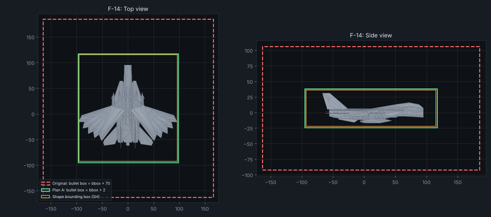
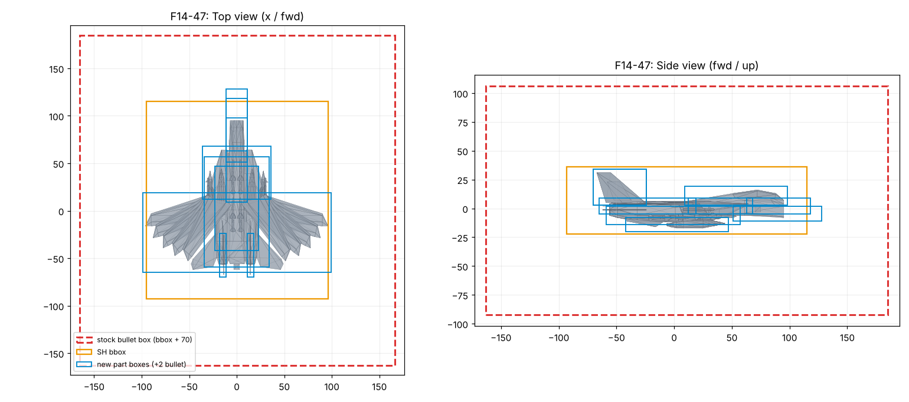
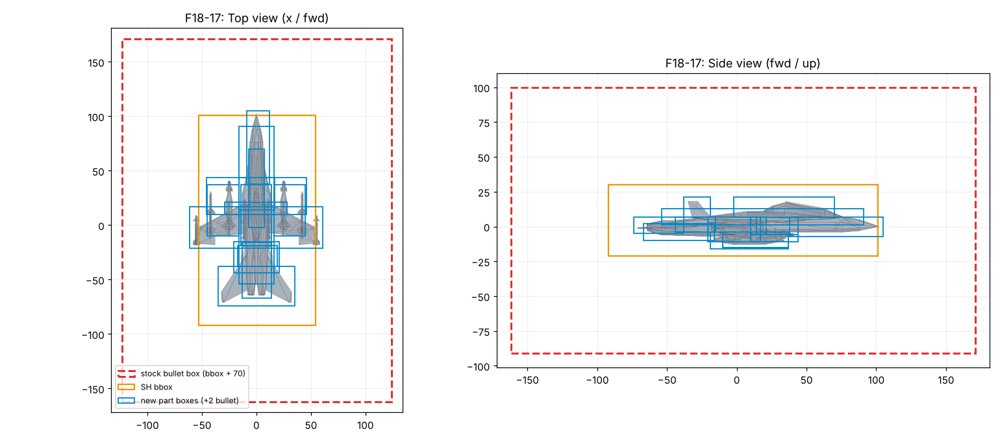

Gun hit boxes fixed
機砲判定框修好了
In Fighters Anthology, cannon rounds often “hit” an aircraft while the tracer is still a long way from the airframe. That is not your aim: FA.EXE tests bullets against a box that is far bigger than the plane. This page shows where that box comes from, and gives you an FA.EXE that makes it fit.
在 Fighters Anthology 裡，機砲子彈常常離機身還很遠就顯示「擊中」。這不是你瞄不準：FA.EXE 判定子彈時用的框，比飛機大非常多。這一頁說明那個框從哪裡來，並提供一個讓它貼近機身的 FA.EXE。
One file inside: FA.EXE (1.02f) with both the FA_BIG limits and the new bullet hit box. It replaces the earlier FA_BIG.ZIP.
裡面只有一個檔案：FA.EXE（1.02f），同時有 FA_BIG 的放大上限和新的子彈判定框。它取代之前的 FA_BIG.ZIP。
The problem
問題
Fire the gun at an enemy and the hit flash appears in the air beside a wing, above the tail, or in front of the nose. The round never touched the model you see. The hit test is simply generous, and for a small, thin target like a fighter it is generous in every direction by 70 units.
對敵機開砲，擊中的火花會出現在機翼旁邊、垂尾上方，或機鼻前面的空氣中。子彈根本沒碰到你看到的模型。原因是判定框給得太寬，對戰鬥機這種又小又薄的目標，每個方向都多給了 70 單位。

Where FA.EXE defines it
FA.EXE 在哪裡定義
Found by static analysis of FA.EXE 1.02f. Addresses are virtual addresses.
用靜態分析 FA.EXE 1.02f 找到的。位址是虛擬位址。
0x46345C → 0x42B800. For each object it calls 0x42C9B0, which clips the segment against that object’s box (0x42D050).0x46345C → 0x42B800。對每個物件呼叫 0x42C9B0，用 0x42D050 把線段和該物件的框做裁切。F2 table (wing tip to wing tip, gear to fin top). Aircraft shapes have no part boxes, so the whole airframe is one block.F2 表裡的整體外框（翼尖到翼尖、起落架到垂尾頂）。飛機外形沒有分段的框，整架飛機就是一個方塊。PROJ field 81). Guns have 0, but FA raises it to at least 20 (0x463364). Aircraft types carry a flag (0x800) that grows the box by that radius.PROJ 第 81 欄）。機砲是 0，但 FA 會把它補到至少 20（0x463364）。飛機的型別有個旗標（0x800）會把框放大這個半徑。0x1E00. For a projectile these add another +50 to the box and to the quick-reject sphere (0x42D10B, 0x42CB84). All 319 aircraft PT files have them.0x1E00 旗標。對投射物來說，會再把框和快速排除的球多加 50（0x42D10B、0x42CB84）。319 個飛機 PT 檔全都有。So the stock bullet box is the shape box plus 20 + 50 = 70 on every side.
所以原版的子彈判定框 = 外形外框，每一邊再加 20 + 50 = 70。
| Aircraft | 飛機 | Shape box (x · up · fwd) | 外形外框（左右 · 上下 · 前後） | Original bullet box | 原版子彈框 | Fixed bullet box | 修正後子彈框 |
|---|---|---|---|---|---|---|---|
| F-14 | 191 × 58 × 208 | 331 × 198 × 348 | 195 × 62 × 212 | ||||
| F/A-18 | 107 × 51 × 193 | 247 × 191 × 333 | 111 × 55 × 197 |
For the F-14 the original box is about 9 times the volume of the fixed one, and over three times as tall as the jet.
以 F-14 來說，原版的框體積大約是修正後的 9 倍，高度是飛機本身的三倍多。
The fix
修正方式
Only 8 bytes of FA.EXE change: the extra 50 → 0 (two places) and the minimum bullet radius 20 → 2 (two places). The CRC32 is forged back to the original, like FA_BIG, so launchers that check it still work. Missiles and bombs are not affected: their own proximity radius in the JT is 50 or more.
FA.EXE 只改 8 個 byte：額外的 50 → 0（兩處）、子彈最小半徑 20 → 2（兩處）。CRC32 和 FA_BIG 一樣被調回原版的值，會檢查 CRC 的啟動器照樣能用。飛彈和炸彈不受影響：它們在 JT 裡自己的近炸半徑是 50 以上。
Want it tighter, or looser?
想要更緊，或更鬆？
FA_BIG/fa_gun_hitbox.py makes the patched EXE from any 1.02f or FA_BIG FA.EXE: python fa_gun_hitbox.py FA.EXE OUT.EXE <extra> <min radius>. The original game is 50 20, this release is 0 2. Something like 10 5 is a more forgiving middle.
FA_BIG/fa_gun_hitbox.py 可以從任何 1.02f 或 FA_BIG 的 FA.EXE 產生修改版：python fa_gun_hitbox.py FA.EXE OUT.EXE <額外值> <最小半徑>。原版是 50 20，這次發布是 0 2。想寬鬆一點可以用 10 5 之類的值。
Optional: hit boxes that follow the shape
進階：貼合外形的分段碰撞框
FA already supports several small boxes per shape (carriers and buildings use them): the box list in the F2 table is tested after the bounding box, the nearest one wins, and a shot that hits none is a miss. No aircraft shape ships with any. tools/shgen/hitbox/sh_hitbox.py builds them from the drawn faces (swing wings covered at every sweep). It needs the patched EXE, otherwise each small box would be grown by 70 again. I generated test builds with it, but it is not part of the download; a Tomcat shape only has room for 9 boxes, a Hornet 14.
FA 本來就支援每個外形有多個小框（航艦和建築就是這樣）：F2 表裡的框清單會在整體外框之後逐一測試，取最近的，一個都沒打中就算沒中。但沒有任何飛機外形附這種框。tools/shgen/hitbox/sh_hitbox.py 可以依畫出來的面自動產生（變後掠翼涵蓋每個掠角）。它必須搭配修改過的 EXE，否則每個小框又會被放大 70。我用它做過測試版本，但不包含在下載裡；Tomcat 的外形只剩 9 個框的空間，Hornet 是 14 個。


Install
安裝
- Make sure you have FA 1.02f. The patch is built from the 1.02f
FA.EXE. - Back up your current
FA.EXE(for example rename it toFA_ORIG.EXE). - Download FA_BIG.ZIP and unzip it into the game folder. It contains one file,
FA.EXE. - Keep the name
FA.EXE. The game looks for<exe name>.SMS. - Start a mission and shoot at a jet from behind. Rounds that pass beside a wing tip should now fly on.
- 確認你的 FA 是 1.02f 版。修改是從 1.02f 的
FA.EXE做的。 - 先備份目前的
FA.EXE（例如改名成FA_ORIG.EXE）。 - 下載 FA_BIG.ZIP，解壓到遊戲目錄。裡面只有一個檔案：
FA.EXE。 - 檔名一定要是
FA.EXE。遊戲會用自己的檔名去找<檔名>.SMS。 - 開始任務，從後面對一架噴射機開砲。從翼尖旁邊擦過的子彈現在應該會直接飛過去。
FA.EXE and rename FA_ORIG.EXE back. Missions and settings are not touched. If you play online, I have not tested it with other players.FA.EXE，再把 FA_ORIG.EXE 改回來。任務檔和設定都不受影響。連線對戰我沒有和其他玩家測試過。Source: FA_BIG on GitHub has fa_gun_hitbox.py (every address is commented), fa_patch_limits.py and crc_match.py.
原始碼：GitHub 上的 FA_BIG 目錄有 fa_gun_hitbox.py（每個位址都有註解）、fa_patch_limits.py 和 crc_match.py。